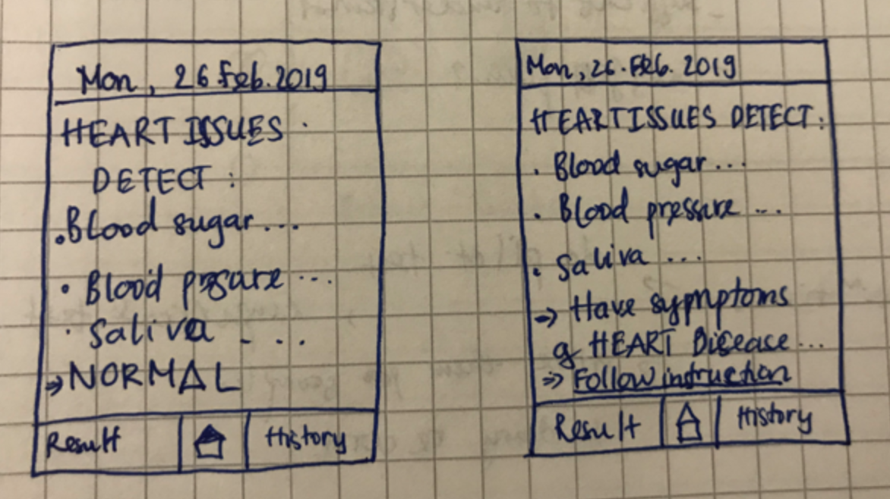
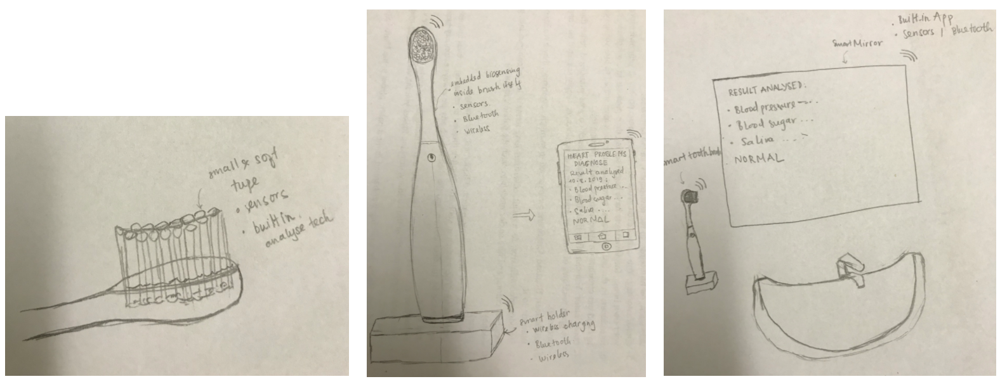
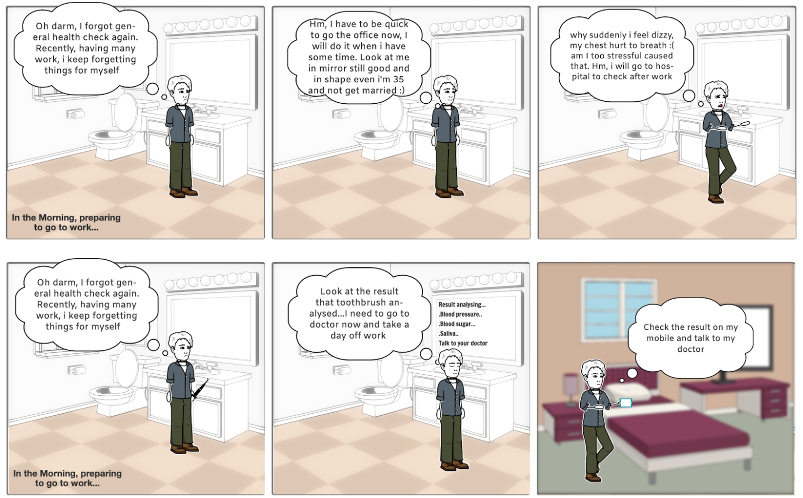
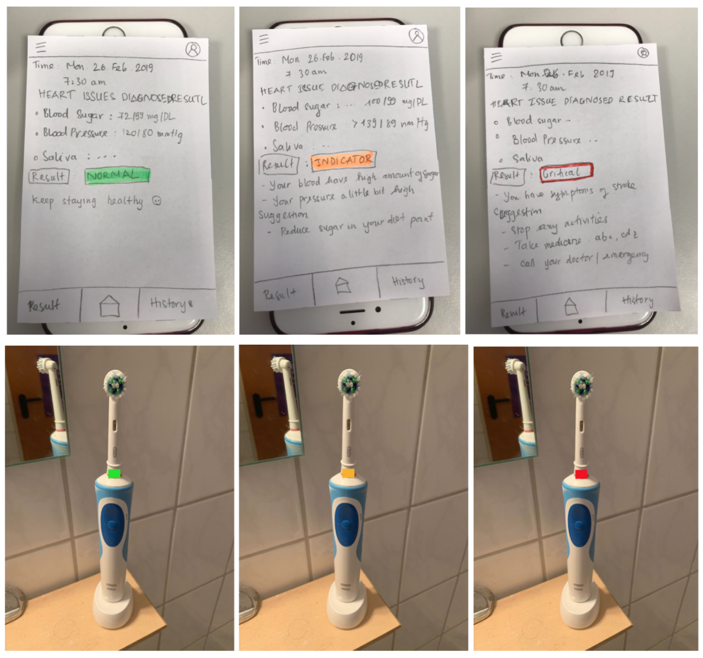

HCI Research
Smart Toothbrush saving our lives from heart problems
Overview
This study applied on User centered design modal with the qualitiative methods: observation, survery, interview. According to each phase from: understand, requirement analysis, ideation, prototype and evaluation, I delivered the materials: user story, sketch, prototype, and findings.
My role
HCI Researcher
Completed
Winter 2019
University Project
The problem
According to American Heart Association, a link between heart disease and periodontal disease by the spread of bacteria, and other germs, from your mouth to other parts of the body through the bloodstream. Once these bacteria reach the heart, they can attach themselves to any damaged area and cause inflammation, which cause cardiovascular illness and stroke. Heart attack probably becomes the most common health problem today. Who have suffered a heart attack before, generally say that they did not know that they were having an attack as it was happening. The symptoms of an attack progress sneakily and smartly.
The solution
Medical devices, products and technologies are converging to revolutionize home and self-care health system now and significantly increasing in the near future, making it possible for people to play a greater role in maintaining their own health. The design of intelligent toothbrush which is capable of monitoring brushing motion with a biosensing chip that checks your blood pressure, your heart rate and some biological samples from saliva in order to analyse your heart risks while you are brushing your teeth, is described. The smart toothbrush is connected via a mobile app which help user to analysis and collect their data to predict and recognize the heart diseases.
Understand
I researched about the other products on the markets and related works about smart toothbrush study. Also, I created a questionaires and send it over the mailist to gain the user demographics and their needs.
Ideation and User cases
Based on the collected requirements and problems, sketch idea: deliver the sketch of the product and accompanying mobile application sketchs.
 User scenarios
Prototype
I deliver the prototype model of smart toothbrush that is enable detect user’s heart diseases and satisfies the identified problems and requirem Then we would conduct the pilot test with invited participant, and do empirical usability test in living lab.
Findings
-
People do care about their heart healthcare and most of the participants do the general health check one a year
-
Participants feel scared if heart attack or stroke occur to them, they don’t know what should do to overcome right at that time.
-
Maria who has experienced heart problems before, goes to see doctor one at 3 months to check and get medicines. She will use the smart toothbrush at once if it appears in the market.
-
The smart toothbrush should have real time feedback right on the brush in the bathroom because most people don’t bring mobile phone while brushing their teeth.
-
The smart toothbrush should be easy to use, don't have a complex procedures to follow because they don’t want to be disturbed or spend much effort on doing normal daily routine in the morning (rush time) .
-
Some people want to have features of sending oral health (tooth decay, throat…) to their phones to keep track as well.
-
People will use the smart toothbrush to keep track of their heart issues in particular and the general health in common, but they want the smart toothbrush will also brush clean and appropriately